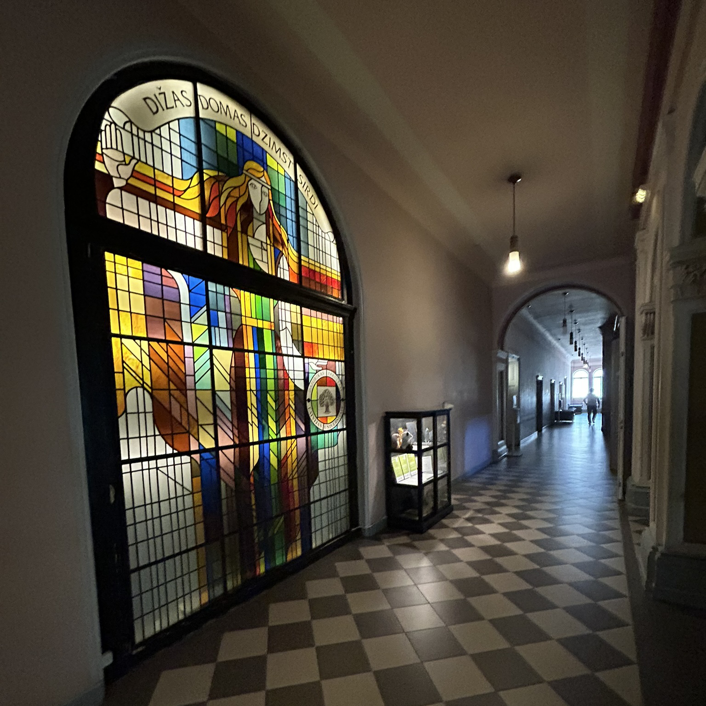

Foto: Reinis Odītis, LU DF telpas
Turpinājums
Uzsākot studijas Datorikas fakultātē, pirmie semestri likās samērā viegli un daudz laika mācībām nepavadīju. Ļoti noderēja dzīves laikā gūtās matemātikas zināšanas un prasme programmēt. Laikam grūtākais bija mācības apvienot ar pilnas slodzes darbu.
Bieži nācās lekcijās domāt par darāmajiem amata pienākumiem un otrādi. Tagad atskatoties, gan vēlos domāt, ka tas palīdzēja man novērtēt laiku.
Iemācījos to plānot, kā arī no sirds izbaudīt brīvo laiku, jo zināju, ka tas ir stipri ierobežots.